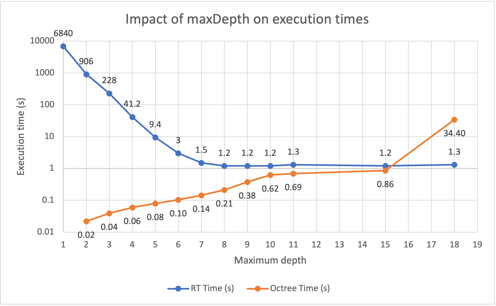
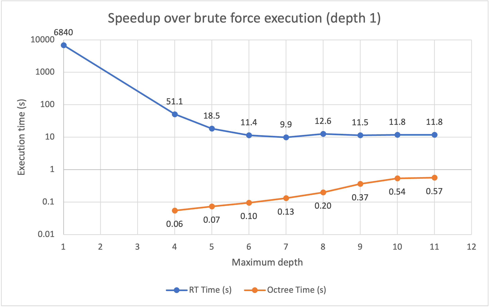
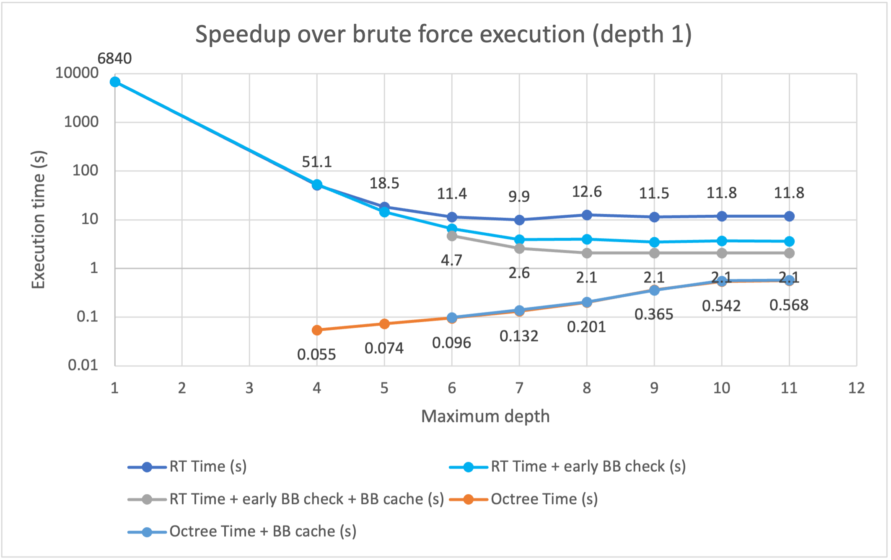
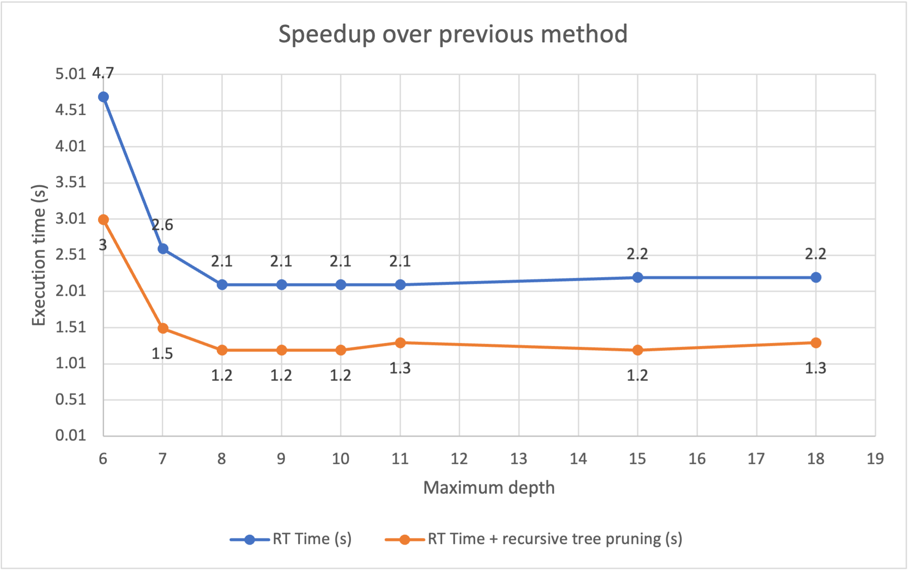
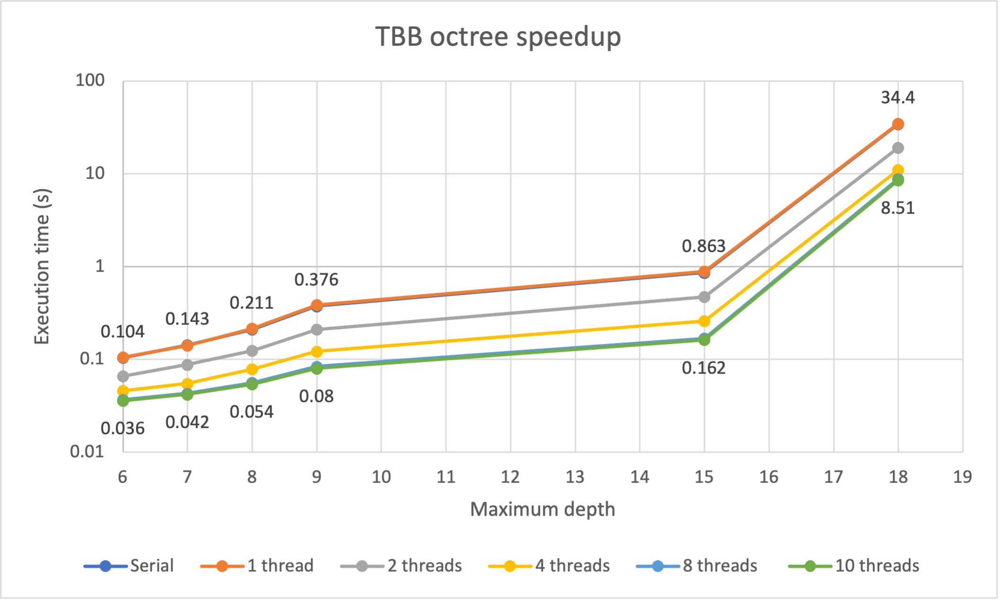

**Homework 2**

Student name: Federico Stella

Sciper number: 342796

Octree construction (50 pts)
============================
What is a reasonable max depth of the tree? (2 pts)
--------------------------------------------------

The optimal max depth for the tree depends on the tradeoff between the amount of time taken by the tree construction and the amount of time saved during ray intersection, thus it can heavily depend on how efficient are the implementations of the tree construction *and* the ray intersection itself *and* the specific rendering that one wants to obtain. For this specific task (Ajax bust normals), and considering the root node to be at depth 1, a maximum depth of 8 offers slight advantages over 7 at a small cost in tree construction. Above 8, the returns are heavily dimishing, with ray tracing times remaining stable with a higher upfront cost in tree construction. In this specific mesh, memory is not a problem until a max depth of around 18 (which uses up to 11 GB on this mesh in my final implementation), which is anyway clearly out of scope.

To testify the fact that the optimal maximum depth depends on the ray tracing algorithm as well, it is worth noticing that in my inefficient first ray tracing implementation the best depth was 6 or 7, as shown in the raw data contained in `notes.txt` and in the charts from the following section.

Here is a chart showing the rendering times and octree building times using my latest implementation. Ray tracing is executed on 8 threads, octree building is executed serially.



In general, considering a mesh with N triangles, I wouldn't suggest to go beyond a tree depth of $\left \lceil{(log_8(N))} \right \rceil$ (+1 as in my case the root is defined at depth 1), which in fact translates to a depth of 8 for the Ajax mesh. If the maximum number of triangles allowed per leaf node was higher, the required depth of the tree would be lower, and viceversa, so this should be taken into account too. One way to do so is to check the average number of triangles per leaf during tree construction, and set a maximum depth dynamically. The strictly optimal way, anyway, would be to run the rendering algorithm at different max depths to choose the best one if possible.

What information do you store per octree node? (2 pts)
------------------------------------------------------
I created a small hierarchy consisting of an abstract struct `OctreeNode`, which consists in a `BoundingBox` and a `bool`, and is specialized by `ParentOctreeNode` and `LeafOctreeNode`. The former includes an array of 8 pointers to its children, the latter includes an `std::vector<uint32_t>` storing the indices of triangles contained in the leaf. The `bool` is a flag to indicate whether the node is a `Parent` of a `Leaf`. At first I used a virtual method, but it ended up being slithly slower than the bool, due to the virtual method LUT, with no benefit in memory.

The `BoundingBox` field could as well be discarded, as it can be easily recomputed on the fly. However, at least for the current rendering task, there is a clear benefit in speed when caching this information directly in octree nodes. Octree building time is virtually unchanged, whereas rendering times were almost halved at any maximum depth. The memory footprint of the cached algorithm is up to 1.3-1.4x the memory footprint of the other, depending on the selected depth, which is not a concern at least for now as we are talking about 27MB vs 35MB at depth 8.

How many bytes of memory does one of your octree nodes occupy? (3 pts)
----------------------------------------------------------------------
The `ParentOctreeNode` struct occupies 24 bytes for the `BoudingBox`, 1 bit for the `bool`, and 8*8 bytes for the children pointers, making up a total with padding of **96 bytes**.

The `LeafOctreeNode` struct oppies 24 bytes for the `BoundingBox`, 1 bit for the `bool`, and 24 bytes for the base element of the `std::vector<uint32_t>`, making up a total with padding of **56 bytes**. The actual size in memory depends on how many triangle indices are stored in the vector, as well as on the expansion strategy of the vector itself.

In my original implementation I used a generic container with a template of a template, which however caused some problems with the Apple Clang compiler when doing specific operations, and I ultimately had to ditch it. During testing, I found out that `std::vector` was faster than using an `std::list` (by 2-3x), so I specialized the struct (and methods) for it.

(Another way to make it generic would be to use the `begin` and `end` iterators, but this would increase the memory requirement by having to store additional pointers, and would also probably slightly slow down the construction of the tree).

Compute statistics during the tree construction. For the Ajax scene, report:
----------------------------------------------------------------------------
### Construction time with your local machine (not graded)
CPU: M1 Pro 10-cores

211ms serial (average on 3 runs, max depth 8)

54ms parallel on 10 cores (average on 3 runs, max depth 8, not generating a new task when the remaining depth is 4, see the last section of the report)

### Number of interior nodes (2 pts)
27542 (max depth 8)

### Number of leaf nodes (2 pts)
111383 (max depth 8, not counting empty nodes)

### Average number of triangles per leaf node (a triangle can exist in multiple nodes) (2 pts)
13.614 (max depth 8, not counting empty nodes)

Ray traversal (25 pts)
======================

Explain the logic of your traversal function and justify its correctness. (4 pts)
--------------------------------------------------
My original traversal function can be found at commit `e59dba5`, with subsequent commits showing efficiency gains.

The basic idea, however, remained the same. It is a depth-first traversal of the Octree, implemented iteratively using lists, as the recursive version with argument passing over a stack can actually result to be slower in my experience. The algorithm inserts the root node in the queue of nodes to be explored, and then proceeds to explore the queue until there is no node left. When exploring a node, it can be either empty, a parent of a leaf. If it's empty or if the ray does not intersect the bounding box of the node, it is discarded. If it does intersect and the node is a parent, all its children are added to the queue (in front, to be depth-first using a `pop_front` operation). If it's a leaf, the triangles are evaluated for intersections.

In this way, all nodes that have a potential ray intersection are explored, and their triangles evaluated.

Subsequent commits show efficiency gains in multiple ways. Most importantly:
- Instead of computing Bounding Boxes on the fly, caching them on Octree nodes proved to be faster;
- Instead of checking for intersections when exctracting a node from the queue, anticipating this check can prevent lots of push and pop operations from happening. 

Measure the render time of the Ajax scene on your machine. How much of a speed-up did you achieve over what was there before? You may need to slightly reduce both the resolution and number of samples per pixel to obtain an estimate of the time required by the brute force algorithm. This is based on the reasonable assumption that the rendering time is proportional to the product of the number of pixels and samples per pixel. But for a fair comparison, the resolution should not be too low. Elaborate the configuration details you use for comparison. (5 pts)
--------------------------------------------------

The following chart shows the speedup of my first ray traversal implementation (`e59dba5` commit) over brute force (represented as depth 1). All the following experiments are carried out using 8 threads on an M1 Pro, keeping the original 768x768 resolution and 32 samples for the Ajax mesh, and are an average over 3 runs (except when they took over a minute, in which case it was only one run). The best results are obtained here at depth 7, with a speedup of roughly 700x.



The following chart reports the speed up of the two efficiency tricks explained in the previous section. Here, the best depth shifts to 8, and the speedup over brute force is around 3000x.




Improved ray traversal (25 pts)
===============================

Include the surface normal visualization of the Ajax bust rendered by both your basic and improved implementations. They should match perfectly.
--------------------------------------------------

Surface normal visualization of the Ajax bust, on the left my basic implementation (with the efficiency tricks, at commit `4163c5f`), on the right my final implementation:
<div class="twentytwenty-container">
    
    
</div>

Here is also a comparison of the reference result (left) with my final implementation (right):
<div class="twentytwenty-container">
    
    
</div>


How did you implement the sorting? Explain your design choices. (2 pts)
--------------------------------------------------
Considering a Parent node, the sorting is implemented by computing the smaller of the two ray `t` values for each child and storing it in a simple `float` array. Such array is then used to sort the children using `std::sort`. The tree should not be modified during traversal, as multiple rays can be evaluated at the same time, so the children are not sorted directly from the array of children contained in a Parent node. Instead, an array of `uint8_t` is created to store the *indices* of the children contained in the Parent. Both this array and the array of `t` values are created on the stack with constant size 8, avoiding slow dynamic calls. In case some children are not intersected by the ray, their indices are not stored. The sorting only happens for the actually valid children, saving some computation time. Moreover, the `rayIntersect` function from BoundingBox is guaranteed to be called only once, as its `nearT` and `farT` results are first checked by my code (avoiding the need to call the two different versions of the function) and then `nearT` is stored in the array so that it can be rechecked before its corresponding node is evaluated.

Initially I implemented this mechanism in my iterative ray traversal code, but it turned out to be slower than my baseline in my first implementation, and then just a bit faster using a more efficient implementation. I figured that there was a non-negligible overhead in adding nodes to the queue. In fact, as opposed to a recursive implementation which can avoid to call itself on the subsequent children if the intersection in one of the previous ones can prune the tree, the iterative implementation has to add all the children to the queue, which are then subsequently discarded if the tree can be pruned. This still allows for a speedup thanks to pruning, but it is not as pronounced. For this reason, I switched to a recursive implementation of the depth-first traversal.

Measure the render time with this improved version. How much of a speedup is this relative to Part 2? Elaborate the configuration details you use for comparison. (5 pts)
--------------------------------------------------
Here is a chart comparing my most efficient method in the previous section with my final implementation. All the results are obtained in the same way as in the previous charts: average of 3 runs on M1 Pro with 8 threads, rendering Ajax bust at 768x768 px with 32 samples per pixel.



At best, which is depth 8, it went from 2.1s to 1.2s, gaining an extra 75% in speed. Compared to the brute force, the speedup is around 5700x. Some extra performance could be gained by tweaking the number of triangles allowed per Leaf node, which I noticed by mistake. That parameter has been left to 10 as specified.

Efficiency (40 pts)
=============================
I tested all my implementations while coding them, to optimize them for efficiency, and I've included the most interesting charts in this report. Most notably, caching the Bounding Box information and anticipating the checks on such boxes turned out to be key. I also implemented a parallel version of the octree construction, which can be deactivated at compile time by commenting the line `#define PARALLEL` from `accel.h` in case this is not considered valid for the efficiency points.


Hacker Points (5 pts)
=============================
I've used the TBB library to speed up the octree construction. There could be multiple ways to do so. The simplest way I could think of, would be to spawn a thread for each child of the root node, making it very practical for 8-threaded workloads. However, how to handle more threads? What if a thread is over very quickly due to very few triangles being present in its region, can we use that computational power anyway?

To do so, I decided to follow Intel's own tutorial and extended the `tbb::task` class. In essence, every time an octree node is visited, a new task is created for each of the 8 child nodes. A task scheduler manages a pool of threads (whose actual number can be specified by the user or set to the thread-count of the CPU) and executes the tasks in order, with little overhead, resulting in very good flexibility and no wasted threads, as they are reassigned to a new task when they finish. In order to reduce the overhead, I've set a depth threshold indicating when to stop the creation of a new task, and just finish the execution serially. I've found empirically that making the computation serial at around half of the maximum allowed depth of the tree provides the best results in terms of speed. In this case, then, it gets set to 4.

When set in this way, there is basically no noticeable memory overhead. If the parallel execution goes down to the end of the tree, the memory overhead can become unbearable at higher depths (such as 18), and thus it should be avoided.

Here is a chart comparing tree building times with different numbers of threads (from serial to 10) on M1 Pro, using a serial cutoff of $\left \lceil{maxDepth/2}\right \rceil$.



As it can be seen in the chart, the serial execution and the 1-threaded execution take roughly the same time, showing that with this configuration there is little overhead in using TBB's task scheduler. Overall, in particular at depth 8, executing on 8 threads provides roughly a 4x speedup over serial execution, which is certainly a benefit. Executing on 10 threads does not yield particular benefits in this chart, as the extra 2 cores on this CPU are efficiency cores, and are busy anyway handling other tasks.

Feedback
========

We would appreciate any comments or criticism to improve the projects in future years--naturally, this part will not be graded. Examples of information that is useful to us includes:

* How much time did you spend on the assignment? How was it divided between designing, coding, and testing?

    *Around 3 full days (I was having fun testing multiple configurations and algorithm variants)*

* What advice should we have given you before you started?
* What was hard or surprising about the assignment?
* What did you like or dislike? What else would you change?


<!-- Slider -->
<script src="https://ajax.googleapis.com/ajax/libs/jquery/3.5.1/jquery.min.js"></script>
<script src="../resources/jquery.event.move.js"></script>
<script src="../resources/jquery.twentytwenty.js"></script>
<link href="../resources/offcanvas.css" rel="stylesheet">
<link href="../resources/twentytwenty.css" rel="stylesheet" type="text/css" />
<script>var markdeepOptions = {onLoad: function() {$(".twentytwenty-container").twentytwenty({default_offset_pct: 0.5, move_slider_on_hover: true});} };</script>
<!-- Markdeep: -->
<script src="https://morgan3d.github.io/markdeep/latest/markdeep.min.js?" charset="utf-8"></script>
<script>window.alreadyProcessedMarkdeep||(document.body.style.visibility="visible")</script>
